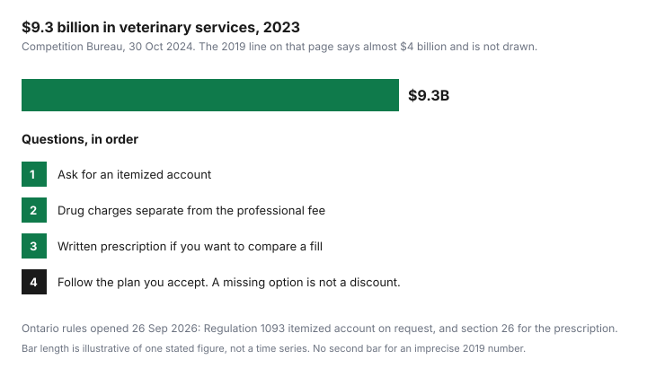

Pets · Canada
How to Save Money on Vet Bills in Canada Without Skimping on Care
A clinic visit is a professional service and, often, a retail counter. You can ask what the invoice contains without treating the veterinarian as an opponent. The pages behind this guide are the Competition Bureau’s 30 Oct 2024 piece on pet medications and competition, Ontario Regulation 1093 under the Veterinarians Act, and the College of Veterinarians of Ontario’s public prescribing standard and practice-advisory notes, opened 26 Sep 2026. Nothing here tells you which treatment to accept. That is the veterinarian’s recommendation and your decision. The money skill is knowing which questions the rules already allow, and which “savings” would be skipping care.
Key takeaways
- The Bureau’s 30 Oct 2024 page says Canadians spent $9.3 billion on veterinary services in 2023, and it also describes $9.3 billion on veterinary and other services, up from almost $4 billion in 2019. “Almost $4 billion” is not charted as an exact bar.
- In Ontario, failing to itemize services, fees, and disbursements when a client asks is listed as professional misconduct. The record also has to show drug charges separately from charges for advice or other services.
- Once a drug is warranted, Regulation 1093, section 26, requires a written prescription if you ask for one instead of clinic dispensing, unless you ask for an oral prescription that meets the section. The College says a fee for writing it is allowed. No fee amount was opened.
- “Good, better, best” is a question you ask. It is not a statutory menu. A cheaper path that the veterinarian says is unsafe is not a saving.
- No teaching-hospital or humane-society price list was opened. Ask them. Do not use a percent-off rumour. The fund for a large invoice is the cash-parking guide, not a discount code.
Why vet costs rose: the Competition Bureau's 2024 market study (about $9.3B a year in vet spending)
The Bureau’s page is an education piece, dated 30 Oct 2024, not a price-control order. It says Canadians spend around $9.3 billion a year at the vet, citing the Canadian Veterinary Medical Association’s economic-impact work, and the figure caption on that page says Canadians spent $9.3 billion on veterinary services in Canada in 2023. A later paragraph says households spent a total of $9.3 billion on veterinary and other services for pets, a significant increase over the almost $4 billion spent in 2019. Use $9.3 billion as the figure the page states for 2023. Do not turn “almost $4 billion” into a precise 2019 bar. The same page says Statistics Canada figures it relies on show households spent nearly $7.4 billion on pets and pet food in 2022, up from $5.7 billion in 2019. This draft did not re-open that Statistics Canada table. The $7.4 billion is the Bureau’s citation.
The Bureau also reports, from the Canadian Animal Health Institute, that 60 percent of Canadian households owned at least one cat or dog, with an estimated 8.5 million cats and 7.9 million dogs, and that almost one in five owners wanted or needed preventative care and could not get it because of affordability, appointments, or other reasons. Those population figures are not the 2026 figures in the pet-insurance highlights. Different years, different sources. Corporate-owned practices, the Bureau says, were 20.4 percent of the market, against a 2009 picture in which nearly all practices were independent. It names Vet Strategy, National Veterinary Association, and VCA as the top corporate owners according to the Canadian Veterinary Journal. That is a market description, not a list of clinics to avoid. About 30 percent of veterinary revenues, the Bureau says, come from product sales including prescriptions. The cost guides use the Ontario association’s 2025 sheets for a household budget. The Bureau’s page still quotes older annual totals. Do not mix those older totals into the 2025 sheets.
Ask for itemized estimates and 'good, better, best' treatment plans
Ontario Regulation 1093’s professional-misconduct list includes failing to itemize the services provided, the fees, and the disbursements charged, when an itemized account is requested by the client or the client’s agent. You do not need a speech. You need the request. The same regulation’s record rules require the fees and charges to show, separately, those for drugs and those for advice or other services. The College’s accreditation guidance, opened with the prescribing material, says that split is often on an itemized invoice and may also sit on a treatment estimate or in the progress notes. If the invoice you are handed is one number, ask for the itemized account. That request is the rule this draft opened. It is not a request for a discount.
“Good, better, best” is not a phrase in the regulation. It is a way to ask the veterinarian to name the option they recommend, the option that is more extensive, and the option that still meets the medical need if one exists. Sometimes there is no safe cheaper option. The respectful version is to ask, and then to follow the recommendation you accept. Do not substitute a forum protocol. An estimate before a dental or a surgery is the same habit: what is included, what is extra if the findings change, and what the separate drug lines are. The budget guide is where that estimate becomes an envelope instead of a surprise. The sinking-fund guide is how you fund the envelope before the day.
Get written prescriptions and fill them elsewhere
Section 26 of Regulation 1093 says that if the member determines a drug should be prescribed and the client asks for a prescription instead of having the member dispense it, the member shall give the prescription, in writing, unless the client asks for an oral prescription that meets the conditions in the section. The written prescription has to be signed and has to include the drug’s name, strength, and quantity, the member’s name and address, the animal, the client, the directions, the date, withholding times if the animal produces food, refills if any, the member’s name in legible form, and the College licence number. The College’s public standard matches that duty: a written prescription when the client requests it, unless the client wants an oral one given to a veterinarian, an Ontario pharmacist, or a veterinarian outside Ontario. The College’s practice-advisory page says the veterinarian may charge a fee for the written prescription. No dollar amount for that fee was on the page. Ask for it before you assume the prescription is free.
Filling it elsewhere is a price comparison, not a second medical opinion. The medication guide is the Ontario rule, the resale limit in section 33, and the checks for a pharmacy. Section 33(2)(d) says a member shall not knowingly dispense a drug for resale except to another member or a pharmacist in reasonably limited quantities to cover a temporary shortage. That is why “the clinic can just sell a bottle to the pharmacy” is not a plan. Your prescription is the portable piece. Other provinces were not given this depth. British Columbia, New Brunswick, and Nova Scotia are described by the Bureau as restricting resale as well. Use those colleges’ own pages before you quote Ontario’s section number at a clinic outside Ontario. If you are comparing the premium for insurance against the risk of a large bill, that framework is the insurance guide, and the quote grid is the spreadsheet.
Preventive care that avoids expensive emergencies
Prevention is care you buy on purpose so a later invoice is less likely. It is not a calculated refund. The 2025 Ontario canine sheet prices adult parasite prevention at $238 and professional dental care at $1,320. The feline adult sheet prices parasite prevention at $131 and dental care at $1,320. Those are the cost of the prevention and the dental work the association averaged, not a published “dollars saved by doing them.” The Bureau’s page says emergency trips can cost an additional $215 to $1,615 a year in the paragraph beside older ownership estimates. It does not attribute that range to skipped vaccines. Do not skip a preventive the veterinarian has recommended in order to fund a hypothetical emergency. Do ask for the preventive plan to be itemized, so parasite products, exams, and dental are separate lines you can understand.
The Bureau’s CAHI note that almost one in five owners could not get preventative care is an access problem, not a suggestion to go without. If cost is the barrier, say so at the visit and ask what the priority is. A written prescription for a preventive you can price at a pharmacy is one of the questions in the script table. A fund you contribute to monthly is the other half, so a dental estimate is not the first time the household sees the number.
Community clinics, humane societies and vet schools
Low-cost clinics, humane societies, and veterinary-college teaching hospitals exist so that some care is delivered in a different setting. This draft did not open a fee schedule for the Ontario SPCA, a municipal humane society, or the Ontario Veterinary College. A sentence that they are “half price” would be an invention. Phone them, or read their current page, and write the fee they give you next to the clinic estimate for the same service. Teaching hospitals can mean a longer visit because students are part of the care. That is a time trade, not automatically a quality trade, and it is not automatically cheaper. Ask what the appointment includes.
These clinics are not a substitute for emergency instructions your own veterinarian has already given you. If the animal is in distress, use the emergency path the clinic told you to use. A scheduled spay, a vaccine series, or a dental estimate is the kind of non-urgent comparison where a second setting belongs. Ask whether the surgery or the microchip is included before you also budget the first-year lines on the cost sheets.
Scripts for the exam room
The scripts are short because the regulation is short. You are asking for an account, a prescription, or a clearer plan. You are not cross-examining anyone. If the answer is that there is no safer cheaper path, that answer is information.
| Situation | What to ask | Why | Source rule |
|---|---|---|---|
| Routine exam | Please itemize the exam, the vaccines, and any products, with drug charges separate from the professional fee. What is recommended today, and what can wait? | So a wellness visit is not one blended number, and so you can fund the lines that are actually due. | Itemized account on request, misconduct list. Record of fees showing drugs separately from advice or other services. |
| Diagnostic workup | What question does each test answer? What is the estimate for the tests you recommend, and what changes if we stage them? | Staging is a clinical judgment. The estimate tells you the money before you consent. There may be no safe way to skip a test. | The itemized estimate is the Ontario request. The order of tests is the veterinarian’s, not a script. |
| Surgery estimate | Please list the professional fee, anaesthesia, the procedure, drugs, and what happens to the estimate if you find more once you start. Is there a medically acceptable alternative? | The alternative question is “good, better, best” in plain language. If the veterinarian says there is one acceptable plan, stop there. | Itemized account on request. Separate drug charges in the record. No regulation requires three options. |
| Medication | Please write a prescription I can take elsewhere, and tell me the fee for writing it. I will compare the clinic’s dispense price with the pharmacy’s total. | The comparison is useless if the writing fee is a surprise, and unsafe if you change the drug without the prescriber. | Regulation 1093, section 26, when you request the prescription. College advisory: a prescribing fee is allowed. Amount not published here. |

Sources & date stamps
- Competition Bureau, “Pets, vets and meds: The case for more competition,” 30 Oct 2024, opened 26 Sep 2026. $9.3 billion veterinary services in 2023; “almost $4 billion” in 2019 for veterinary and other services; pets and pet food nearly $7.4 billion in 2022 and $5.7 billion in 2019 as the Bureau cites Statistics Canada; CAHI 60 percent, 8.5 million cats, 7.9 million dogs, and almost one in five missing preventative care; 20.4 percent corporate share; about 30 percent of revenue from product sales; exclusive distribution; footnote to Regulation 1093, subsection 33(2)(d).
- Ontario Regulation 1093, opened 26 Sep 2026. Section 26 written prescription on request. Professional misconduct: failing to itemize when an itemized account is requested. Record requirements: fees for drugs separate from advice or other services. Section 33(2)(d) resale limit, temporary-shortage exception for another member or a pharmacist.
- College of Veterinarians of Ontario, Prescribing a Drug standard and practice-advisory notes, opened 26 Sep 2026. Written prescription when requested. A fee may be charged. No amount printed. Accreditation guidance: the drug-versus-service split may be on the invoice, the estimate, or the notes.
- No humane-society, SPCA, or veterinary-college fee was opened. No “percent cheaper” is stated. Older OVMA totals quoted on the Bureau page are not used as 2025 costs.
Frequently asked questions
Can I ask my vet for an itemized estimate?
Yes. Ask. In Ontario, Regulation 1093 lists failing to itemize services, fees, and disbursements, when the client or the client’s agent requests an itemized account, as professional misconduct. The record also has to show drug charges separately from charges for advice or other services. The College’s accreditation guidance says that split may be on the invoice, on the estimate, or in the notes. Other provinces were not quoted in depth here. Use your college’s page outside Ontario.
Do I have to buy medication from my vet?
Not if you ask for a prescription instead. Section 26 says that once the veterinarian determines a drug should be prescribed, a client who wants a prescription rather than clinic dispensing receives it in writing, unless the client asks for an oral prescription that meets the section. The College says a fee for writing it is allowed. No fee was printed on the pages opened 26 Sep 2026. Section 33(2)(d) limits dispensing a drug for resale, with a narrow shortage exception, so the prescription is the piece you carry to a pharmacy. Do not change the drug without the prescriber.
Is it rude to ask about cheaper treatment options?
No. Ask what the veterinarian recommends, whether a more extensive option exists, and whether any alternative still meets the medical need. That is a question, not a regulation that forces three prices. If the answer is that one plan is the safe plan, the saving is not available. Skipping a recommended preventive to hit a number is the opposite of this page. The Bureau’s note that almost one in five owners missed preventative care is a reason to say cost is a barrier, not a reason to disappear.
Are vet school clinics cheaper?
This draft does not know. No fee schedule for a Canadian veterinary college teaching hospital, the Ontario SPCA, or a humane society was opened on 26 Sep 2026. Ask the hospital what the service costs and what the visit includes. A lower fee, if they quote one, can come with a longer appointment. Do not use an unpublished percent. For an emergency, use the path your own clinic already gave you.
What preventive care saves the most money?
No page opened here ranks preventives by dollars saved. The 2025 Ontario sheets price adult dental care at $1,320 and parasite prevention at $238 for a dog and $131 for a cat. Those are costs of care, not measured refunds. The Bureau’s $215 to $1,615 additional emergency range is not tied to a skipped vaccine. Follow the plan your veterinarian recommends, ask for it itemized, and fund it monthly so the invoice is not the first time you see it.